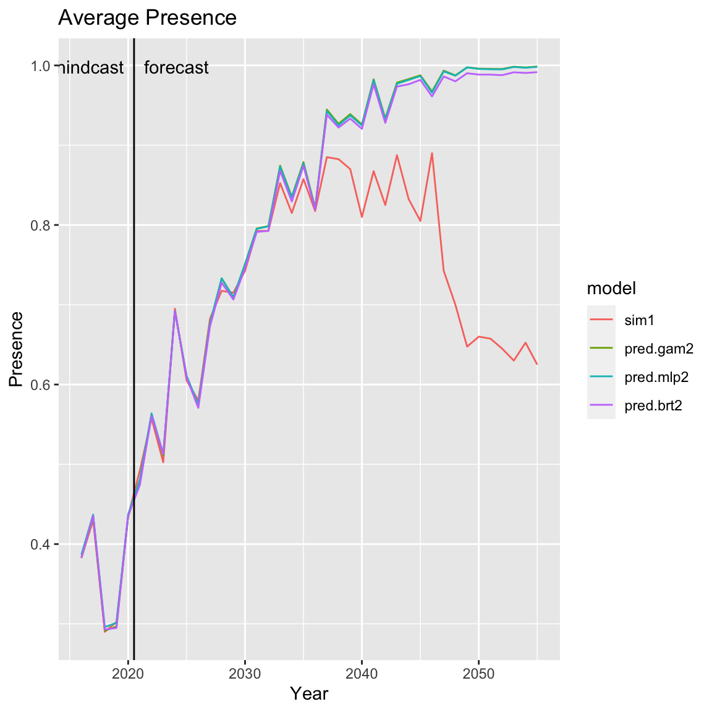

Fitting_SDMs.RmdThis vignette shows how to fit SDMs with the WRAP package and make some basic plots. See the plotting vignette for more details on the plotting functions. The fitting functions in WRAP are
Type ?gam_sdm, etc, to learn about the arguments for the function.
WRAP also includes some plotting functions
plot_cog() Center of gravityplot_abund() Average abundancelibrary(WRAP)
There are three simulation functions that can be used. SimulateWorld_ROMS() which uses ROMS for the environmental fields, SimulateWorld_ROMS_TrophicInteractins() which uses ROMS and trophic interactions, and SimulateWorld() which simulates a temperature field.
We will use SimulateWorld() for this example. Type ?SimulateWorld as console to learn more about this function.
Parameters for the function are
abund_enviro can be “lnorm_low” (SB); “lnorm_high” (EW); or “poisson” (JS).PA_shape can be “logistic” (SB); “logistic_prev”,“linear” (JS)temp_spatial can be “simple” (SB); or “matern” (EW)temp_diff is only for the simulated temperature. It specifies min and max temps at year 1 and year 100 (e.g. temp_diff=c(1,3,5,7) means year 1 varies from 1-3C and year 100 from 5-7C).dir is the directory where ROMS data is stored. The ROMS functions are looking for a directory called gfdl. The default assumption is that this is in your working directory in a folder called Rasters_2d_monthly.We will set the parameters to the following for our simulated abundances and presence/absence grid.
abund_enviro <- "lnorm_low" PA_shape <- "logistic" temp_spatial <- "matern" temp_diff <- c(1,4,3,7)
Simulate species abundances from the simulated temperature fields.
sim1 <- SimulateWorld(temp_diff = temp_diff, temp_spatial = temp_spatial, PA_shape = PA_shape, abund_enviro = abund_enviro, n.year=40, start.year=2015)
Printing the output will show you basic information about the simulation. This information is in sim1$meta.
sim1 ## Simulated species abundance and suitability from WRAP version 1.5 and function SimulateWorld ## covariates: temp ## grid.dimensions: 20, 20, 400 (nrow, ncol, cells) ## grid.resolution 1, 1 (x, y) ## grid.extent 1, 20, 1, 20 (xmin, xmax, ymin, ymax) ## grid.units: not applicable ## time.extent: 2016 to 2055 year
Since simulations take a long time to run, you may want to create a directory in your working directory for the simulations and save them there. Then you can reload the simulations instead of re-running.
Create a directory for the simulations:
if(!dir.exists(file.path(here::here(), 'Sim1'))) dir.create(file.path(here::here(), 'Sim1'))
Save the simulation.
plot(sim1, start.forecast.year=2020)
We will fit GAM, BRT and MLP SDM models to the simulated grids. The fit function will fit the correct model (lognormal or poisson) based on the value of abund_enviro. If you want to restrict the smoothing, you can pass in k to the GAM function. The default fitting period is years prior to 2021 (start.forecast.year=2021). The fitting function will return both the presence and abundance models.
Now plot the comparison of the models for temperaturs 0 to 7C.
First we need to set up the temperatures used for prediction.
new_dat <- data.frame(temp=seq(0,7,length=100))
The predict.OM() function will compute the predicted presence, abundance and expected abundance (pred presence x pred abundance). You can (optionally) pass in a fitted model. If you do not, the predict function will fit a SDM based on the model argument (e.g. predict(sim1, model="gam")). We will pass in the fitted SDMs to speed up the predictions. This predict function for a OM object returns a data frame with pred.p, pred.a, pred and CIs added (pred is expected abundance = pred\(pred.p*exp(pred\)pred.a)). A column pred.type indicates the type of prediction: hindcast, forecast, or newdata.
pred.gam <- predict(sim1, sdm=gam.fit, newdata=new_dat) pred.brt <- predict(sim1, sdm=brt.fit, newdata=new_dat) pred.mlp <- predict(sim1, sdm=mlp.fit, newdata=new_dat)
par(mfrow=c(2,2), mar=c(3,4,4,2)) ylim2 <- 1.05*max(pred.gam$pred, pred.brt$pred, pred.mlp$pred) #actual TPC xx <- seq(0, 7, length=100) #yy must match response function in SimulateWorld function (sim1$meta$response.curve$temp) yy <- dnorm(xx, mean=4, sd=1) plot(xx, yy, type="l", lty=2, main="Actual TPC", col="red", xlim=c(0,8), ylab="suitability", xlab="Temp") xlim <- round(100*(max(new_dat$temp)/7)) lines(xx[1:xlim], yy[1:xlim], lwd=2) #gam plot(new_dat$temp, pred.gam$pred, type="l", main="lnorm_low GAM", xlim=c(0,8), col="red", lty=2, ylim=c(0,ylim2), ylab="Abundance", xlab="Temp") lines(new_dat$temp, pred.gam$pred, lwd=2) #brt plot(new_dat$temp, pred.brt$pred, type="l", main="lnorm_low BRT", xlim=c(0,8), col="red", lty=2, ylim=c(0,ylim2), ylab="Abundance", xlab="Temp") lines(new_dat$temp, pred.brt$pred, lwd=2) #MLP plot(new_dat$temp, pred.mlp$pred, type="l", main="lnorm_low MLP", xlim=c(0,8), col="red", lty=2, ylim=c(0,ylim2), ylab="Abundance", xlab="Temp") lines(new_dat$temp, pred.mlp$pred, lwd=2)
If newdata is left off, predict(sim) where sim is the output from one of the simulation functions (operating model) will return a data frame with a hindcast for years before start.forecast.year and a forecast after that. See ?predict.OM for other arguments that this function takes.
You can pass in a previously fitted SDM to speed up the function as we did before. But you can leave these off and predict will fit the SDM based on the value in sim$meta$abund_enviro. Specify the SDM model with argument model.
pred.gam2 <- predict(sim1, model="gam") pred.brt2 <- predict(sim1, model="brt") pred.mlp2 <- predict(sim1, model="mlp")
This will re-estimate the fitted models. This won’t make a difference for gam and brt, but will for the mlp model with the default settings since that is a stochastic fit. We can pass in our fits so that we use a known model.
pred.gam2 <- predict(sim1, sdm=gam.fit) pred.brt2 <- predict(sim1, sdm=brt.fit) pred.mlp2 <- predict(sim1, sdm=mlp.fit)
Assemble the predictions into one data frame.
nr <- nrow(pred.gam2) pred.all <- rbind(pred.gam2, pred.brt2, pred.mlp2) pred.all$model <- c(rep("gam", nr), rep("brt", nr), rep("mlp", nr))
The function plot_abund() will plot the average abundances of the true data (from simulation) and the fitted models. The required argument is the simulated data (sim1), after that you can add as many fitted (SDM) or prediction (POM) objects as you want to compare. We will use the prediction objects since we already have those and if we pass in the SDMs, the plotting function has to re-run the predictions.
plot_abund(sim1, pred.gam2, pred.mlp2, pred.brt2)
The function plot_cog() will plot the center of gravity of the true data (from the simulation) and the fitted models. The required argument is the simulated data (sim1), after that you can add as many fitted or prediction objects as you want to compare.
plot_cog(sim1, pred.gam2, pred.mlp2, pred.brt2)
The function plot_pres() will plot the average presence.
plot_pres(sim1, pred.gam2, pred.mlp2, pred.brt2)

These are point predictions of abundance for individual cells. We will show this for a particular year, in this case 2021.
plot_grid(sim1, year=2021, pred.gam, pred.mlp, pred.brt)
# You can also pass in SDMs but the predictions will be computed (slow) # plot_grid(sim1, year=2021, gam.fit, mlp.fit, brt.fit)